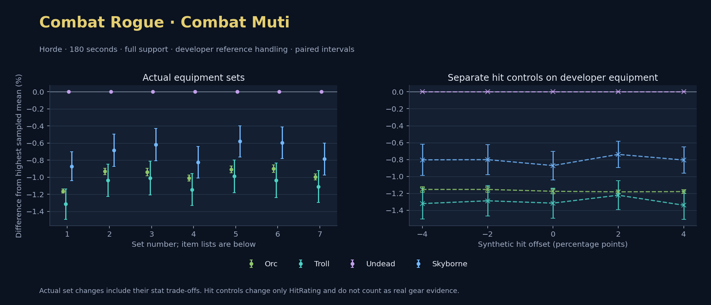

Horde · Orc / Troll / Undead / Skyborne

No pet or guardian appears in the reference combat metrics. Reference: Orc, developer equipment, 180 seconds and full support. Pet choices remain those of the developer build.
WoWSims developer · Mutilate
Unimplemented enchant or active set effects: [{"id": 1676, "pieces": 3, "effects": ["Restores 15 health per 5 sec."]}, {"id": 1676, "pieces": 5, "effects": ["When struck in combat, has a 5% chance to remove a Snare effect from yourself. Can only occur once every 60 sec."]}]
Unmeasured proc rates: [{"source": "set", "id": 1676, "pieces": 4, "kind": "ppm", "origin": "unknown"}, {"source": "item", "id": 19324, "name": "The Lobotomizer", "kind": "ppm", "origin": "vanilla"}, {"source": "enchant", "id": 1900, "name": "Enchant Weapon - Crusader", "kind": "ppm", "origin": "vanilla"}]
180 seconds, full support and original developer references. Hit below is generic sheet melee / spell hit; school and talent bonuses can be attached directly to spells.
| Race | DPS | Gap and interval | Generic hit | Replay |
|---|---|---|---|---|
| Undead | 671.61 | +0.000% ± 0.000 | 13.4% / 13.4% | Native input · Website JSON |
| Skyborne | 665.76 | -0.871% ± 0.168 | 13.4% / 13.4% | Native input · Website JSON |
| Orc | 663.81 | -1.161% ± 0.023 | 13.4% / 13.4% | Native input · Website JSON |
| Troll | 662.78 | -1.315% ± 0.178 | 13.4% / 13.4% | Native input · Website JSON |
| Slot | Item | ID | Enchant |
|---|---|---|---|
| Head | Darkmantle Cap | 226829 | Lesser Arcane Amalgamation |
| Neck | Beads of Ogre Might | 22150 | |
| Shoulder | Darkspear Pauldrons | 272105 | |
| Back | Earthweave Cloak | 21187 | Enchant Cloak - Agility |
| Chest | Darkmantle Tunic | 226825 | Enchant Chest - Living Stats |
| Wrist | Darkmantle Bracers | 226830 | Enchant Bracer - Agility |
| Hands | Darkmantle Grips | 226828 | Enchant Gloves - Greater Agility |
| Waist | Assassin's Waistguard | 272395 | |
| Legs | Darkmantle Pants | 226827 | Lesser Arcane Amalgamation |
| Feet | Darkmantle Footpads | 226831 | Enchant Boots - Minor Speed |
| Ring 1 | Don Julio's Band | 19325 | |
| Ring 2 | Might of Cenarius | 21189 | |
| Trinket 1 | Adaptive Combat Assistant | 272437 | |
| Trinket 2 | Rune of the Guard Captain | 19120 | |
| Main hand | The Lobotomizer | 19324 | Enchant Weapon - Crusader |
| Off hand | Scarlet Kris | 5267 | Enchant Weapon - Agility |
| Ranged / relic | Fahrad's Reloading Repeater | 22347 |
Published ranked alternatives · Published pre-raid
Recorded source replacements: [{"slot": "head", "from": 11735, "to": 252482, "publishedAlternativeRank": 1, "publishedEpDelta": -3.8, "reason": "First published alternative compatible with the current WoWSims database, class, faction and occupied slots."}, {"slot": "back", "from": 13340, "to": 18511, "publishedAlternativeRank": 1, "publishedEpDelta": -16, "reason": "First published alternative compatible with the current WoWSims database, class, faction and occupied slots."}, {"slot": "finger2", "from": 9533, "to": 285190, "publishedAlternativeRank": 2, "publishedEpDelta": -2.6, "reason": "First published alternative compatible with the current WoWSims database, class, faction and occupied slots."}, {"slot": "ranged", "from": 2100, "to": 13023, "publishedAlternativeRank": 1, "publishedEpDelta": -3.6, "reason": "First published alternative compatible with the current WoWSims database, class, faction and occupied slots."}]
Unimplemented enchant or active set effects: [{"id": 143, "pieces": 2, "effects": ["Improves your chance to hit by 2.0%."]}]
Unmeasured proc rates: [{"source": "enchant", "id": 1900, "name": "Enchant Weapon - Crusader", "kind": "ppm", "origin": "vanilla"}, {"source": "enchant", "id": 1900, "name": "Enchant Weapon - Crusader", "kind": "ppm", "origin": "vanilla"}]
180 seconds, full support and original developer references. Hit below is generic sheet melee / spell hit; school and talent bonuses can be attached directly to spells.
| Race | DPS | Gap and interval | Generic hit | Replay |
|---|---|---|---|---|
| Undead | 619.74 | +0.000% ± 0.000 | 8.2% / 8.2% | Native input · Website JSON |
| Skyborne | 615.51 | -0.683% ± 0.190 | 8.2% / 8.2% | Native input · Website JSON |
| Orc | 613.96 | -0.932% ± 0.037 | 8.2% / 8.2% | Native input · Website JSON |
| Troll | 613.33 | -1.034% ± 0.189 | 8.2% / 8.2% | Native input · Website JSON |
| Slot | Item | ID | Enchant |
|---|---|---|---|
| Head | Blue Suede Hat | 252482 | Lesser Arcane Amalgamation |
| Neck | Skibi's Pendant | 13089 | Enchant Necklace - Agility |
| Shoulder | Shadowcraft Spaulders | 16708 | |
| Back | Shifting Cloak | 18511 | Enchant Cloak - Agility |
| Chest | Dawn Armor | 252483 | Enchant Chest - Greater Stats |
| Wrist | Shadowcraft Bracers | 16710 | Enchant Bracer - Agility |
| Hands | Devilsaur Gauntlets | 15063 | Enchant Gloves - Greater Agility |
| Waist | Assassin's Waistguard | 272395 | |
| Legs | Devilsaur Leggings | 15062 | Lesser Arcane Amalgamation |
| Feet | Shadowcraft Boots | 16711 | Enchant Boots - Greater Agility |
| Ring 1 | Cutthroat's Signet | 272408 | |
| Ring 2 | Wyvern Heart Band | 285190 | |
| Trinket 1 | Adaptive Combat Assistant | 272437 | |
| Trinket 2 | Rune of the Guard Captain | 19120 | |
| Main hand | Heartseeker | 12783 | Enchant Weapon - Crusader |
| Off hand | Scarlet Kris | 5267 | Enchant Weapon - Crusader |
| Ranged / relic | Eaglehorn Long Bow | 13023 |
Published one-slot hit alternative · Published pre-raid
One source-listed alternative; at least 80% of the source slot score retained. Reported hit selects the contrast; only native stats determine simulation outcomes. This is an experimental combination, not an endorsed best set.
Recorded source replacements: [{"slot": "head", "from": 11735, "to": 252482, "publishedAlternativeRank": 1, "publishedEpDelta": -3.8, "reason": "First published alternative compatible with the current WoWSims database, class, faction and occupied slots."}, {"slot": "back", "from": 13340, "to": 18511, "publishedAlternativeRank": 1, "publishedEpDelta": -16, "reason": "First published alternative compatible with the current WoWSims database, class, faction and occupied slots."}, {"slot": "finger2", "from": 9533, "to": 285190, "publishedAlternativeRank": 2, "publishedEpDelta": -2.6, "reason": "First published alternative compatible with the current WoWSims database, class, faction and occupied slots."}, {"slot": "ranged", "from": 2100, "to": 13023, "publishedAlternativeRank": 1, "publishedEpDelta": -3.6, "reason": "First published alternative compatible with the current WoWSims database, class, faction and occupied slots."}]
Unimplemented enchant or active set effects: [{"id": 143, "pieces": 2, "effects": ["Improves your chance to hit by 2.0%."]}]
Unmeasured proc rates: [{"source": "enchant", "id": 1900, "name": "Enchant Weapon - Crusader", "kind": "ppm", "origin": "vanilla"}, {"source": "enchant", "id": 1900, "name": "Enchant Weapon - Crusader", "kind": "ppm", "origin": "vanilla"}]
180 seconds, full support and original developer references. Hit below is generic sheet melee / spell hit; school and talent bonuses can be attached directly to spells.
| Race | DPS | Gap and interval | Generic hit | Replay |
|---|---|---|---|---|
| Undead | 610.56 | +0.000% ± 0.000 | 6.2% / 6.2% | Native input · Website JSON |
| Skyborne | 606.78 | -0.620% ± 0.189 | 6.2% / 6.2% | Native input · Website JSON |
| Orc | 604.82 | -0.940% ± 0.044 | 6.2% / 6.2% | Native input · Website JSON |
| Troll | 604.40 | -1.008% ± 0.197 | 6.2% / 6.2% | Native input · Website JSON |
| Slot | Item | ID | Enchant |
|---|---|---|---|
| Head | Blue Suede Hat | 252482 | Lesser Arcane Amalgamation |
| Neck | Skibi's Pendant | 13089 | Enchant Necklace - Agility |
| Shoulder | Shadowcraft Spaulders | 16708 | |
| Back | Shifting Cloak | 18511 | Enchant Cloak - Agility |
| Chest | Dawn Armor | 252483 | Enchant Chest - Greater Stats |
| Wrist | Shadowcraft Bracers | 16710 | Enchant Bracer - Agility |
| Hands | Devilsaur Gauntlets | 15063 | Enchant Gloves - Greater Agility |
| Waist | Might of the Timbermaw | 19044 | |
| Legs | Devilsaur Leggings | 15062 | Lesser Arcane Amalgamation |
| Feet | Shadowcraft Boots | 16711 | Enchant Boots - Greater Agility |
| Ring 1 | Cutthroat's Signet | 272408 | |
| Ring 2 | Wyvern Heart Band | 285190 | |
| Trinket 1 | Adaptive Combat Assistant | 272437 | |
| Trinket 2 | Rune of the Guard Captain | 19120 | |
| Main hand | Heartseeker | 12783 | Enchant Weapon - Crusader |
| Off hand | Scarlet Kris | 5267 | Enchant Weapon - Crusader |
| Ranged / relic | Eaglehorn Long Bow | 13023 |
Published one-slot hit alternative · Published pre-raid
One source-listed alternative; at least 80% of the source slot score retained. Reported hit selects the contrast; only native stats determine simulation outcomes. This is an experimental combination, not an endorsed best set.
Recorded source replacements: [{"slot": "head", "from": 11735, "to": 252482, "publishedAlternativeRank": 1, "publishedEpDelta": -3.8, "reason": "First published alternative compatible with the current WoWSims database, class, faction and occupied slots."}, {"slot": "back", "from": 13340, "to": 18511, "publishedAlternativeRank": 1, "publishedEpDelta": -16, "reason": "First published alternative compatible with the current WoWSims database, class, faction and occupied slots."}, {"slot": "finger2", "from": 9533, "to": 285190, "publishedAlternativeRank": 2, "publishedEpDelta": -2.6, "reason": "First published alternative compatible with the current WoWSims database, class, faction and occupied slots."}, {"slot": "ranged", "from": 2100, "to": 13023, "publishedAlternativeRank": 1, "publishedEpDelta": -3.6, "reason": "First published alternative compatible with the current WoWSims database, class, faction and occupied slots."}]
Unimplemented enchant or active set effects: [{"id": 143, "pieces": 2, "effects": ["Improves your chance to hit by 2.0%."]}]
Unmeasured proc rates: [{"source": "enchant", "id": 1900, "name": "Enchant Weapon - Crusader", "kind": "ppm", "origin": "vanilla"}, {"source": "enchant", "id": 1900, "name": "Enchant Weapon - Crusader", "kind": "ppm", "origin": "vanilla"}]
180 seconds, full support and original developer references. Hit below is generic sheet melee / spell hit; school and talent bonuses can be attached directly to spells.
| Race | DPS | Gap and interval | Generic hit | Replay |
|---|---|---|---|---|
| Undead | 623.81 | +0.000% ± 0.000 | 9.2% / 9.2% | Native input · Website JSON |
| Skyborne | 618.66 | -0.826% ± 0.184 | 9.2% / 9.2% | Native input · Website JSON |
| Orc | 617.52 | -1.008% ± 0.036 | 9.2% / 9.2% | Native input · Website JSON |
| Troll | 616.67 | -1.145% ± 0.187 | 9.2% / 9.2% | Native input · Website JSON |
| Slot | Item | ID | Enchant |
|---|---|---|---|
| Head | Blue Suede Hat | 252482 | Lesser Arcane Amalgamation |
| Neck | Skibi's Pendant | 13089 | Enchant Necklace - Agility |
| Shoulder | Shadowcraft Spaulders | 16708 | |
| Back | Howler's Furs | 272414 | Enchant Cloak - Agility |
| Chest | Dawn Armor | 252483 | Enchant Chest - Greater Stats |
| Wrist | Shadowcraft Bracers | 16710 | Enchant Bracer - Agility |
| Hands | Devilsaur Gauntlets | 15063 | Enchant Gloves - Greater Agility |
| Waist | Assassin's Waistguard | 272395 | |
| Legs | Devilsaur Leggings | 15062 | Lesser Arcane Amalgamation |
| Feet | Shadowcraft Boots | 16711 | Enchant Boots - Greater Agility |
| Ring 1 | Cutthroat's Signet | 272408 | |
| Ring 2 | Wyvern Heart Band | 285190 | |
| Trinket 1 | Adaptive Combat Assistant | 272437 | |
| Trinket 2 | Rune of the Guard Captain | 19120 | |
| Main hand | Heartseeker | 12783 | Enchant Weapon - Crusader |
| Off hand | Scarlet Kris | 5267 | Enchant Weapon - Crusader |
| Ranged / relic | Eaglehorn Long Bow | 13023 |
Published ranked alternatives · Published pre-raid
Recorded source replacements: [{"slot": "head", "from": 11735, "to": 252482, "publishedAlternativeRank": 1, "publishedEpDelta": -3.8, "reason": "First published alternative compatible with the current WoWSims database, class, faction and occupied slots."}, {"slot": "back", "from": 13340, "to": 18511, "publishedAlternativeRank": 1, "publishedEpDelta": -16, "reason": "First published alternative compatible with the current WoWSims database, class, faction and occupied slots."}, {"slot": "hands", "from": 227809, "to": 15063, "publishedAlternativeRank": 1, "publishedEpDelta": -11.4, "reason": "First published alternative compatible with the current WoWSims database, class, faction and occupied slots."}, {"slot": "finger2", "from": 17713, "to": 285190, "publishedAlternativeRank": 2, "publishedEpDelta": -8.3, "reason": "First published alternative compatible with the current WoWSims database, class, faction and occupied slots."}, {"slot": "ranged", "from": 2100, "to": 13023, "publishedAlternativeRank": 1, "publishedEpDelta": -3.6, "reason": "First published alternative compatible with the current WoWSims database, class, faction and occupied slots."}]
Unimplemented enchant or active set effects: [{"id": 143, "pieces": 2, "effects": ["Improves your chance to hit by 2.0%."]}]
Unmeasured proc rates: [{"source": "enchant", "id": 1900, "name": "Enchant Weapon - Crusader", "kind": "ppm", "origin": "vanilla"}, {"source": "enchant", "id": 1900, "name": "Enchant Weapon - Crusader", "kind": "ppm", "origin": "vanilla"}]
180 seconds, full support and original developer references. Hit below is generic sheet melee / spell hit; school and talent bonuses can be attached directly to spells.
| Race | DPS | Gap and interval | Generic hit | Replay |
|---|---|---|---|---|
| Undead | 618.21 | +0.000% ± 0.000 | 7.5% / 7.5% | Native input · Website JSON |
| Skyborne | 614.62 | -0.581% ± 0.182 | 7.5% / 7.5% | Native input · Website JSON |
| Orc | 612.59 | -0.909% ± 0.038 | 7.5% / 7.5% | Native input · Website JSON |
| Troll | 612.10 | -0.989% ± 0.192 | 7.5% / 7.5% | Native input · Website JSON |
| Slot | Item | ID | Enchant |
|---|---|---|---|
| Head | Blue Suede Hat | 252482 | Lesser Arcane Amalgamation |
| Neck | Skibi's Pendant | 13089 | Enchant Necklace - Agility |
| Shoulder | Shadowcraft Spaulders | 16708 | |
| Back | Shifting Cloak | 18511 | Enchant Cloak - Agility |
| Chest | Dawn Armor | 252483 | Enchant Chest - Greater Stats |
| Wrist | Shadowcraft Bracers | 16710 | Enchant Bracer - Agility |
| Hands | Devilsaur Gauntlets | 15063 | Enchant Gloves - Greater Agility |
| Waist | Assassin's Waistguard | 272395 | |
| Legs | Devilsaur Leggings | 15062 | Lesser Arcane Amalgamation |
| Feet | Shadowcraft Boots | 16711 | Enchant Boots - Greater Agility |
| Ring 1 | Cutthroat's Signet | 272408 | |
| Ring 2 | Wyvern Heart Band | 285190 | |
| Trinket 1 | Adaptive Combat Assistant | 272437 | |
| Trinket 2 | Molten Heart of the Mountain | 249470 | |
| Main hand | Heartseeker | 12783 | Enchant Weapon - Crusader |
| Off hand | Scarlet Kris | 5267 | Enchant Weapon - Crusader |
| Ranged / relic | Eaglehorn Long Bow | 13023 |
Published one-slot hit alternative · Published pre-raid
One source-listed alternative; at least 80% of the source slot score retained. Reported hit selects the contrast; only native stats determine simulation outcomes. This is an experimental combination, not an endorsed best set.
Recorded source replacements: [{"slot": "head", "from": 11735, "to": 252482, "publishedAlternativeRank": 1, "publishedEpDelta": -3.8, "reason": "First published alternative compatible with the current WoWSims database, class, faction and occupied slots."}, {"slot": "back", "from": 13340, "to": 18511, "publishedAlternativeRank": 1, "publishedEpDelta": -16, "reason": "First published alternative compatible with the current WoWSims database, class, faction and occupied slots."}, {"slot": "hands", "from": 227809, "to": 15063, "publishedAlternativeRank": 1, "publishedEpDelta": -11.4, "reason": "First published alternative compatible with the current WoWSims database, class, faction and occupied slots."}, {"slot": "finger2", "from": 17713, "to": 285190, "publishedAlternativeRank": 2, "publishedEpDelta": -8.3, "reason": "First published alternative compatible with the current WoWSims database, class, faction and occupied slots."}, {"slot": "ranged", "from": 2100, "to": 13023, "publishedAlternativeRank": 1, "publishedEpDelta": -3.6, "reason": "First published alternative compatible with the current WoWSims database, class, faction and occupied slots."}]
Unimplemented enchant or active set effects: [{"id": 143, "pieces": 2, "effects": ["Improves your chance to hit by 2.0%."]}]
Unmeasured proc rates: [{"source": "enchant", "id": 1900, "name": "Enchant Weapon - Crusader", "kind": "ppm", "origin": "vanilla"}, {"source": "enchant", "id": 1900, "name": "Enchant Weapon - Crusader", "kind": "ppm", "origin": "vanilla"}]
180 seconds, full support and original developer references. Hit below is generic sheet melee / spell hit; school and talent bonuses can be attached directly to spells.
| Race | DPS | Gap and interval | Generic hit | Replay |
|---|---|---|---|---|
| Undead | 612.52 | +0.000% ± 0.000 | 6.5% / 6.5% | Native input · Website JSON |
| Skyborne | 608.87 | -0.597% ± 0.184 | 6.5% / 6.5% | Native input · Website JSON |
| Orc | 607.02 | -0.899% ± 0.045 | 6.5% / 6.5% | Native input · Website JSON |
| Troll | 606.17 | -1.037% ± 0.201 | 6.5% / 6.5% | Native input · Website JSON |
| Slot | Item | ID | Enchant |
|---|---|---|---|
| Head | Blue Suede Hat | 252482 | Lesser Arcane Amalgamation |
| Neck | Skibi's Pendant | 13089 | Enchant Necklace - Agility |
| Shoulder | Shadowcraft Spaulders | 16708 | |
| Back | Shifting Cloak | 18511 | Enchant Cloak - Agility |
| Chest | Timbermaw Tunic | 252484 | Enchant Chest - Greater Stats |
| Wrist | Shadowcraft Bracers | 16710 | Enchant Bracer - Agility |
| Hands | Devilsaur Gauntlets | 15063 | Enchant Gloves - Greater Agility |
| Waist | Assassin's Waistguard | 272395 | |
| Legs | Devilsaur Leggings | 15062 | Lesser Arcane Amalgamation |
| Feet | Shadowcraft Boots | 16711 | Enchant Boots - Greater Agility |
| Ring 1 | Cutthroat's Signet | 272408 | |
| Ring 2 | Wyvern Heart Band | 285190 | |
| Trinket 1 | Adaptive Combat Assistant | 272437 | |
| Trinket 2 | Molten Heart of the Mountain | 249470 | |
| Main hand | Heartseeker | 12783 | Enchant Weapon - Crusader |
| Off hand | Scarlet Kris | 5267 | Enchant Weapon - Crusader |
| Ranged / relic | Eaglehorn Long Bow | 13023 |
Published one-slot hit alternative · Published pre-raid
One source-listed alternative; at least 80% of the source slot score retained. Reported hit selects the contrast; only native stats determine simulation outcomes. This is an experimental combination, not an endorsed best set.
Recorded source replacements: [{"slot": "head", "from": 11735, "to": 252482, "publishedAlternativeRank": 1, "publishedEpDelta": -3.8, "reason": "First published alternative compatible with the current WoWSims database, class, faction and occupied slots."}, {"slot": "back", "from": 13340, "to": 18511, "publishedAlternativeRank": 1, "publishedEpDelta": -16, "reason": "First published alternative compatible with the current WoWSims database, class, faction and occupied slots."}, {"slot": "hands", "from": 227809, "to": 15063, "publishedAlternativeRank": 1, "publishedEpDelta": -11.4, "reason": "First published alternative compatible with the current WoWSims database, class, faction and occupied slots."}, {"slot": "finger2", "from": 17713, "to": 285190, "publishedAlternativeRank": 2, "publishedEpDelta": -8.3, "reason": "First published alternative compatible with the current WoWSims database, class, faction and occupied slots."}, {"slot": "ranged", "from": 2100, "to": 13023, "publishedAlternativeRank": 1, "publishedEpDelta": -3.6, "reason": "First published alternative compatible with the current WoWSims database, class, faction and occupied slots."}]
Unimplemented enchant or active set effects: [{"id": 143, "pieces": 2, "effects": ["Improves your chance to hit by 2.0%."]}]
Unmeasured proc rates: [{"source": "enchant", "id": 1900, "name": "Enchant Weapon - Crusader", "kind": "ppm", "origin": "vanilla"}, {"source": "enchant", "id": 1900, "name": "Enchant Weapon - Crusader", "kind": "ppm", "origin": "vanilla"}]
180 seconds, full support and original developer references. Hit below is generic sheet melee / spell hit; school and talent bonuses can be attached directly to spells.
| Race | DPS | Gap and interval | Generic hit | Replay |
|---|---|---|---|---|
| Undead | 622.97 | +0.000% ± 0.000 | 8.5% / 8.5% | Native input · Website JSON |
| Skyborne | 618.06 | -0.787% ± 0.188 | 8.5% / 8.5% | Native input · Website JSON |
| Orc | 616.75 | -0.998% ± 0.036 | 8.5% / 8.5% | Native input · Website JSON |
| Troll | 616.06 | -1.109% ± 0.188 | 8.5% / 8.5% | Native input · Website JSON |
| Slot | Item | ID | Enchant |
|---|---|---|---|
| Head | Blue Suede Hat | 252482 | Lesser Arcane Amalgamation |
| Neck | Skibi's Pendant | 13089 | Enchant Necklace - Agility |
| Shoulder | Shadowcraft Spaulders | 16708 | |
| Back | Howler's Furs | 272414 | Enchant Cloak - Agility |
| Chest | Dawn Armor | 252483 | Enchant Chest - Greater Stats |
| Wrist | Shadowcraft Bracers | 16710 | Enchant Bracer - Agility |
| Hands | Devilsaur Gauntlets | 15063 | Enchant Gloves - Greater Agility |
| Waist | Assassin's Waistguard | 272395 | |
| Legs | Devilsaur Leggings | 15062 | Lesser Arcane Amalgamation |
| Feet | Shadowcraft Boots | 16711 | Enchant Boots - Greater Agility |
| Ring 1 | Cutthroat's Signet | 272408 | |
| Ring 2 | Wyvern Heart Band | 285190 | |
| Trinket 1 | Adaptive Combat Assistant | 272437 | |
| Trinket 2 | Molten Heart of the Mountain | 249470 | |
| Main hand | Heartseeker | 12783 | Enchant Weapon - Crusader |
| Off hand | Scarlet Kris | 5267 | Enchant Weapon - Crusader |
| Ranged / relic | Eaglehorn Long Bow | 13023 |
The same declared pool is available to every race. Each race keeps its best validation-sample set with its screening-selected racial policy. Separate samples confirm that choice, with fresh precision samples near the practical-loss boundary. Gaps use the highest sampled mean under that same duration, support and reference treatment as their reference. A zero reference gap does not certify a race; the main matrix also allows uncertainty in the leader.
| Pool | Seconds | Support | References | Race | DPS | Gap and interval | Racial policies / mana | Selected set | Generic hit: melee / spell | Replay |
|---|---|---|---|---|---|---|---|---|---|---|
| published-pre-raid | 60 | full | developer | Undead | 680.94 | +0.000% ± 0.00020,000 iterations | developer / developer / developerMana waits 0.0s | published-rogue-combat-mutilate-horde-3f3ad6eaaf57638d-higher-hit | 8.5% / 8.5% | Input · Result · Stats |
| published-pre-raid | 60 | full | developer | Troll | 679.04 | -0.279% ± 0.06720,000 iterations | developer / developer / developerMana waits 0.0s | published-rogue-combat-mutilate-horde-3f3ad6eaaf57638d-higher-hit | 8.5% / 8.5% | Input · Result · Stats |
| published-pre-raid | 60 | full | developer | Orc | 677.45 | -0.513% ± 0.01120,000 iterations | developer / developer / developerMana waits 0.0s | published-rogue-combat-mutilate-horde-3f3ad6eaaf57638d-higher-hit | 8.5% / 8.5% | Input · Result · Stats |
| published-pre-raid | 60 | full | developer | Skyborne | 676.48 | -0.655% ± 0.05820,000 iterations | developer / developer / developerMana waits 0.0s | published-rogue-combat-mutilate-horde-3f3ad6eaaf57638d-higher-hit | 8.5% / 8.5% | Input · Result · Stats |
| published-pre-raid | 60 | full | explicit | Undead | 660.25 | +0.000% ± 0.00020,000 iterations | developer / developer / developerMana waits 0.0s | published-rogue-combat-mutilate-horde-3f3ad6eaaf57638d-higher-hit | 8.5% / 8.5% | Input · Result · Stats |
| published-pre-raid | 60 | full | explicit | Troll | 658.10 | -0.326% ± 0.06820,000 iterations | developer / developer / developerMana waits 0.0s | published-rogue-combat-mutilate-horde-3f3ad6eaaf57638d-higher-hit | 8.5% / 8.5% | Input · Result · Stats |
| published-pre-raid | 60 | full | explicit | Skyborne | 655.65 | -0.698% ± 0.05920,000 iterations | developer / developer / developerMana waits 0.0s | published-rogue-combat-mutilate-horde-3f3ad6eaaf57638d-higher-hit | 8.5% / 8.5% | Input · Result · Stats |
| published-pre-raid | 60 | full | explicit | Orc | 655.62 | -0.701% ± 0.01120,000 iterations | oncd / developer / developerMana waits 0.0s | published-rogue-combat-mutilate-horde-3f3ad6eaaf57638d-higher-hit | 8.5% / 8.5% | Input · Result · Stats |
| published-pre-raid | 60 | self | developer | Undead | 356.58 | +0.000% ± 0.0005,000 iterations | developer / developer / developerMana waits 0.0s | published-rogue-combat-mutilate-horde-3f3ad6eaaf57638d-higher-hit | 8.5% / 8.5% | Input · Result · Stats |
| published-pre-raid | 60 | self | developer | Troll | 351.73 | -1.360% ± 0.1235,000 iterations | oncd / developer / developerMana waits 0.0s | published-rogue-combat-mutilate-horde-3f3ad6eaaf57638d-higher-hit | 8.5% / 8.5% | Input · Result · Stats |
| published-pre-raid | 60 | self | developer | Orc | 350.68 | -1.655% ± 0.0315,000 iterations | developer / developer / developerMana waits 0.0s | published-rogue-combat-mutilate-horde-3f3ad6eaaf57638d-higher-hit | 8.5% / 8.5% | Input · Result · Stats |
| published-pre-raid | 60 | self | developer | Skyborne | 350.24 | -1.779% ± 0.1075,000 iterations | developer / developer / developerMana waits 0.0s | published-rogue-combat-mutilate-horde-3f3ad6eaaf57638d-higher-hit | 8.5% / 8.5% | Input · Result · Stats |
| published-pre-raid | 60 | self | explicit | Undead | 342.59 | +0.000% ± 0.0005,000 iterations | developer / developer / developerMana waits 0.0s | published-rogue-combat-mutilate-horde-3f3ad6eaaf57638d-higher-hit | 8.5% / 8.5% | Input · Result · Stats |
| published-pre-raid | 60 | self | explicit | Troll | 337.62 | -1.448% ± 0.1235,000 iterations | oncd / developer / developerMana waits 0.0s | published-rogue-combat-mutilate-horde-3f3ad6eaaf57638d-higher-hit | 8.5% / 8.5% | Input · Result · Stats |
| published-pre-raid | 60 | self | explicit | Skyborne | 336.15 | -1.878% ± 0.1085,000 iterations | developer / developer / developerMana waits 0.0s | published-rogue-combat-mutilate-horde-3f3ad6eaaf57638d-higher-hit | 8.5% / 8.5% | Input · Result · Stats |
| published-pre-raid | 60 | self | explicit | Orc | 336.07 | -1.903% ± 0.0325,000 iterations | oncd / developer / developerMana waits 0.0s | published-rogue-combat-mutilate-horde-3f3ad6eaaf57638d-higher-hit | 8.5% / 8.5% | Input · Result · Stats |
| published-pre-raid | 180 | full | developer | Undead | 623.90 | +0.000% ± 0.0005,000 iterations | developer / developer / developerMana waits 0.0s | published-rogue-combat-mutilate-horde-bfad403a804a0bfd-higher-hit | 9.2% / 9.2% | Input · Result · Stats · Website JSON |
| published-pre-raid | 180 | full | developer | Skyborne | 619.79 | -0.659% ± 0.0785,000 iterations | developer / developer / developerMana waits 0.0s | published-rogue-combat-mutilate-horde-bfad403a804a0bfd-higher-hit | 9.2% / 9.2% | Input · Result · Stats · Website JSON |
| published-pre-raid | 180 | full | developer | Orc | 617.60 | -1.011% ± 0.0145,000 iterations | developer / developer / developerMana waits 0.0s | published-rogue-combat-mutilate-horde-bfad403a804a0bfd-higher-hit | 9.2% / 9.2% | Input · Result · Stats · Website JSON |
| published-pre-raid | 180 | full | developer | Troll | 616.69 | -1.157% ± 0.0825,000 iterations | developer / developer / developerMana waits 0.0s | published-rogue-combat-mutilate-horde-bfad403a804a0bfd-higher-hit | 9.2% / 9.2% | Input · Result · Stats · Website JSON |
| published-pre-raid | 180 | full | explicit | Undead | 613.85 | +0.000% ± 0.0005,000 iterations | developer / developer / developerMana waits 0.0s | published-rogue-combat-mutilate-horde-bfad403a804a0bfd-higher-hit | 9.2% / 9.2% | Input · Result · Stats |
| published-pre-raid | 180 | full | explicit | Skyborne | 609.64 | -0.685% ± 0.0785,000 iterations | developer / developer / developerMana waits 0.0s | published-rogue-combat-mutilate-horde-bfad403a804a0bfd-higher-hit | 9.2% / 9.2% | Input · Result · Stats |
| published-pre-raid | 180 | full | explicit | Orc | 606.98 | -1.119% ± 0.0175,000 iterations | oncd / developer / developerMana waits 0.0s | published-rogue-combat-mutilate-horde-bfad403a804a0bfd-higher-hit | 9.2% / 9.2% | Input · Result · Stats |
| published-pre-raid | 180 | full | explicit | Troll | 606.48 | -1.200% ± 0.0825,000 iterations | developer / developer / developerMana waits 0.0s | published-rogue-combat-mutilate-horde-bfad403a804a0bfd-higher-hit | 9.2% / 9.2% | Input · Result · Stats |
| published-pre-raid | 180 | self | developer | Undead | 317.82 | +0.000% ± 0.0005,000 iterations | developer / developer / developerMana waits 0.0s | published-rogue-combat-mutilate-horde-bfad403a804a0bfd-higher-hit | 9.2% / 9.2% | Input · Result · Stats |
| published-pre-raid | 180 | self | developer | Skyborne | 312.21 | -1.765% ± 0.0775,000 iterations | developer / developer / developerMana waits 0.0s | published-rogue-combat-mutilate-horde-3f3ad6eaaf57638d-higher-hit | 8.5% / 8.5% | Input · Result · Stats |
| published-pre-raid | 180 | self | developer | Orc | 311.16 | -2.094% ± 0.0305,000 iterations | developer / developer / developerMana waits 0.0s | published-rogue-combat-mutilate-horde-3f3ad6eaaf57638d-higher-hit | 8.5% / 8.5% | Input · Result · Stats |
| published-pre-raid | 180 | self | developer | Troll | 311.10 | -2.114% ± 0.0805,000 iterations | developer / developer / developerMana waits 0.0s | published-rogue-combat-mutilate-horde-3f3ad6eaaf57638d-higher-hit | 8.5% / 8.5% | Input · Result · Stats |
| published-pre-raid | 180 | self | explicit | Undead | 311.25 | +0.000% ± 0.0005,000 iterations | developer / developer / developerMana waits 0.0s | published-rogue-combat-mutilate-horde-bfad403a804a0bfd-higher-hit | 9.2% / 9.2% | Input · Result · Stats |
| published-pre-raid | 180 | self | explicit | Skyborne | 305.57 | -1.822% ± 0.0785,000 iterations | developer / developer / developerMana waits 0.0s | published-rogue-combat-mutilate-horde-3f3ad6eaaf57638d-higher-hit | 8.5% / 8.5% | Input · Result · Stats |
| published-pre-raid | 180 | self | explicit | Troll | 304.49 | -2.170% ± 0.0815,000 iterations | developer / developer / developerMana waits 0.0s | published-rogue-combat-mutilate-horde-3f3ad6eaaf57638d-higher-hit | 8.5% / 8.5% | Input · Result · Stats |
| published-pre-raid | 180 | self | explicit | Orc | 304.30 | -2.232% ± 0.0325,000 iterations | oncd / developer / developerMana waits 0.0s | published-rogue-combat-mutilate-horde-3f3ad6eaaf57638d-higher-hit | 8.5% / 8.5% | Input · Result · Stats |
| published-pre-raid | 300 | full | developer | Undead | 614.97 | +0.000% ± 0.0005,000 iterations | developer / developer / developerMana waits 0.0s | published-rogue-combat-mutilate-horde-bfad403a804a0bfd-higher-hit | 9.2% / 9.2% | Input · Result · Stats |
| published-pre-raid | 300 | full | developer | Skyborne | 610.66 | -0.701% ± 0.0655,000 iterations | developer / developer / developerMana waits 0.0s | published-rogue-combat-mutilate-horde-bfad403a804a0bfd-higher-hit | 9.2% / 9.2% | Input · Result · Stats |
| published-pre-raid | 300 | full | developer | Troll | 608.29 | -1.085% ± 0.0665,000 iterations | developer / developer / developerMana waits 0.0s | published-rogue-combat-mutilate-horde-bfad403a804a0bfd-higher-hit | 9.2% / 9.2% | Input · Result · Stats |
| published-pre-raid | 300 | full | developer | Orc | 608.13 | -1.112% ± 0.0125,000 iterations | developer / developer / developerMana waits 0.0s | published-rogue-combat-mutilate-horde-bfad403a804a0bfd-higher-hit | 9.2% / 9.2% | Input · Result · Stats |
| published-pre-raid | 300 | full | explicit | Undead | 604.84 | +0.000% ± 0.0005,000 iterations | developer / developer / developerMana waits 0.0s | published-rogue-combat-mutilate-horde-bfad403a804a0bfd-higher-hit | 9.2% / 9.2% | Input · Result · Stats |
| published-pre-raid | 300 | full | explicit | Skyborne | 600.47 | -0.722% ± 0.0665,000 iterations | developer / developer / developerMana waits 0.0s | published-rogue-combat-mutilate-horde-bfad403a804a0bfd-higher-hit | 9.2% / 9.2% | Input · Result · Stats |
| published-pre-raid | 300 | full | explicit | Troll | 598.07 | -1.119% ± 0.0675,000 iterations | developer / developer / developerMana waits 0.0s | published-rogue-combat-mutilate-horde-bfad403a804a0bfd-higher-hit | 9.2% / 9.2% | Input · Result · Stats |
| published-pre-raid | 300 | full | explicit | Orc | 597.60 | -1.197% ± 0.0175,000 iterations | oncd / developer / developerMana waits 0.0s | published-rogue-combat-mutilate-horde-bfad403a804a0bfd-higher-hit | 9.2% / 9.2% | Input · Result · Stats |
| published-pre-raid | 300 | self | developer | Undead | 311.88 | +0.000% ± 0.0005,000 iterations | developer / developer / developerMana waits 0.0s | published-rogue-combat-mutilate-horde-bfad403a804a0bfd-higher-hit | 9.2% / 9.2% | Input · Result · Stats |
| published-pre-raid | 300 | self | developer | Skyborne | 306.22 | -1.814% ± 0.0635,000 iterations | developer / developer / developerMana waits 0.0s | published-rogue-combat-mutilate-horde-bfad403a804a0bfd-higher-hit | 9.2% / 9.2% | Input · Result · Stats |
| published-pre-raid | 300 | self | developer | Troll | 305.29 | -2.113% ± 0.0645,000 iterations | oncd / developer / developerMana waits 0.0s | published-rogue-combat-mutilate-horde-bfad403a804a0bfd-higher-hit | 9.2% / 9.2% | Input · Result · Stats |
| published-pre-raid | 300 | self | developer | Orc | 304.89 | -2.241% ± 0.0185,000 iterations | oncd / developer / developerMana waits 0.0s | published-rogue-combat-mutilate-horde-bfad403a804a0bfd-higher-hit | 9.2% / 9.2% | Input · Result · Stats |
| published-pre-raid | 300 | self | explicit | Undead | 305.21 | +0.000% ± 0.0005,000 iterations | developer / developer / developerMana waits 0.0s | published-rogue-combat-mutilate-horde-bfad403a804a0bfd-higher-hit | 9.2% / 9.2% | Input · Result · Stats |
| published-pre-raid | 300 | self | explicit | Skyborne | 299.52 | -1.864% ± 0.0655,000 iterations | developer / developer / developerMana waits 0.0s | published-rogue-combat-mutilate-horde-bfad403a804a0bfd-higher-hit | 9.2% / 9.2% | Input · Result · Stats |
| published-pre-raid | 300 | self | explicit | Troll | 298.62 | -2.159% ± 0.0665,000 iterations | developer / developer / developerMana waits 0.0s | published-rogue-combat-mutilate-horde-bfad403a804a0bfd-higher-hit | 9.2% / 9.2% | Input · Result · Stats |
| published-pre-raid | 300 | self | explicit | Orc | 298.04 | -2.349% ± 0.0205,000 iterations | oncd / developer / developerMana waits 0.0s | published-rogue-combat-mutilate-horde-bfad403a804a0bfd-higher-hit | 9.2% / 9.2% | Input · Result · Stats |
| developer-reference | 60 | full | developer | Undead | 727.48 | +0.000% ± 0.00020,000 iterations | developer / developer / developerMana waits 0.0s | developer | 13.4% / 13.4% | Input · Result · Stats |
| developer-reference | 60 | full | developer | Troll | 727.24 | -0.033% ± 0.06520,000 iterations | oncd / developer / developerMana waits 0.0s | developer | 13.4% / 13.4% | Input · Result · Stats |
| developer-reference | 60 | full | developer | Orc | 722.32 | -0.710% ± 0.00820,000 iterations | developer / developer / developerMana waits 0.0s | developer | 13.4% / 13.4% | Input · Result · Stats |
| developer-reference | 60 | full | developer | Skyborne | 721.56 | -0.814% ± 0.05520,000 iterations | developer / developer / developerMana waits 0.0s | developer | 13.4% / 13.4% | Input · Result · Stats |
| developer-reference | 60 | full | explicit | Undead | 706.38 | +0.000% ± 0.00020,000 iterations | developer / developer / developerMana waits 0.0s | developer | 13.4% / 13.4% | Input · Result · Stats |
| developer-reference | 60 | full | explicit | Troll | 705.65 | -0.103% ± 0.06620,000 iterations | oncd / developer / developerMana waits 0.0s | developer | 13.4% / 13.4% | Input · Result · Stats |
| developer-reference | 60 | full | explicit | Orc | 700.26 | -0.865% ± 0.00920,000 iterations | oncd / developer / developerMana waits 0.0s | developer | 13.4% / 13.4% | Input · Result · Stats |
| developer-reference | 60 | full | explicit | Skyborne | 700.22 | -0.872% ± 0.05520,000 iterations | developer / developer / developerMana waits 0.0s | developer | 13.4% / 13.4% | Input · Result · Stats |
| developer-reference | 60 | self | developer | Undead | 379.56 | +0.000% ± 0.0005,000 iterations | developer / developer / developerMana waits 0.0s | developer | 13.4% / 13.4% | Input · Result · Stats |
| developer-reference | 60 | self | developer | Troll | 374.49 | -1.337% ± 0.1235,000 iterations | oncd / developer / developerMana waits 0.0s | developer | 13.4% / 13.4% | Input · Result · Stats |
| developer-reference | 60 | self | developer | Skyborne | 371.75 | -2.058% ± 0.1025,000 iterations | developer / developer / developerMana waits 0.0s | developer | 13.4% / 13.4% | Input · Result · Stats |
| developer-reference | 60 | self | developer | Orc | 371.45 | -2.137% ± 0.0235,000 iterations | developer / developer / developerMana waits 0.0s | developer | 13.4% / 13.4% | Input · Result · Stats |
| developer-reference | 60 | self | explicit | Undead | 365.48 | +0.000% ± 0.0005,000 iterations | developer / developer / developerMana waits 0.0s | developer | 13.4% / 13.4% | Input · Result · Stats |
| developer-reference | 60 | self | explicit | Troll | 360.09 | -1.476% ± 0.1225,000 iterations | oncd / developer / developerMana waits 0.0s | developer | 13.4% / 13.4% | Input · Result · Stats |
| developer-reference | 60 | self | explicit | Skyborne | 357.50 | -2.185% ± 0.1035,000 iterations | developer / developer / developerMana waits 0.0s | developer | 13.4% / 13.4% | Input · Result · Stats |
| developer-reference | 60 | self | explicit | Orc | 356.83 | -2.366% ± 0.0245,000 iterations | oncd / developer / developerMana waits 0.0s | developer | 13.4% / 13.4% | Input · Result · Stats |
| developer-reference | 180 | full | developer | Undead | 672.14 | +0.000% ± 0.0005,000 iterations | developer / developer / developerMana waits 0.0s | developer | 13.4% / 13.4% | Input · Result · Stats · Website JSON |
| developer-reference | 180 | full | developer | Skyborne | 666.21 | -0.881% ± 0.0765,000 iterations | developer / developer / developerMana waits 0.0s | developer | 13.4% / 13.4% | Input · Result · Stats · Website JSON |
| developer-reference | 180 | full | developer | Orc | 664.39 | -1.153% ± 0.0125,000 iterations | developer / developer / developerMana waits 0.0s | developer | 13.4% / 13.4% | Input · Result · Stats · Website JSON |
| developer-reference | 180 | full | developer | Troll | 662.51 | -1.432% ± 0.0795,000 iterations | oncd / developer / developerMana waits 0.0s | developer | 13.4% / 13.4% | Input · Result · Stats · Website JSON |
| developer-reference | 180 | full | explicit | Undead | 661.84 | +0.000% ± 0.0005,000 iterations | developer / developer / developerMana waits 0.0s | developer | 13.4% / 13.4% | Input · Result · Stats |
| developer-reference | 180 | full | explicit | Skyborne | 655.81 | -0.911% ± 0.0765,000 iterations | developer / developer / developerMana waits 0.0s | developer | 13.4% / 13.4% | Input · Result · Stats |
| developer-reference | 180 | full | explicit | Orc | 653.62 | -1.242% ± 0.0155,000 iterations | oncd / developer / developerMana waits 0.0s | developer | 13.4% / 13.4% | Input · Result · Stats |
| developer-reference | 180 | full | explicit | Troll | 652.02 | -1.483% ± 0.0805,000 iterations | oncd / developer / developerMana waits 0.0s | developer | 13.4% / 13.4% | Input · Result · Stats |
| developer-reference | 180 | self | developer | Undead | 342.27 | +0.000% ± 0.0005,000 iterations | developer / developer / developerMana waits 0.0s | developer | 13.4% / 13.4% | Input · Result · Stats |
| developer-reference | 180 | self | developer | Skyborne | 335.18 | -2.070% ± 0.0735,000 iterations | developer / developer / developerMana waits 0.0s | developer | 13.4% / 13.4% | Input · Result · Stats |
| developer-reference | 180 | self | developer | Troll | 333.90 | -2.445% ± 0.0765,000 iterations | developer / developer / developerMana waits 0.0s | developer | 13.4% / 13.4% | Input · Result · Stats |
| developer-reference | 180 | self | developer | Orc | 333.67 | -2.513% ± 0.0165,000 iterations | developer / developer / developerMana waits 0.0s | developer | 13.4% / 13.4% | Input · Result · Stats |
| developer-reference | 180 | self | explicit | Undead | 335.59 | +0.000% ± 0.0005,000 iterations | developer / developer / developerMana waits 0.0s | developer | 13.4% / 13.4% | Input · Result · Stats |
| developer-reference | 180 | self | explicit | Skyborne | 328.43 | -2.132% ± 0.0735,000 iterations | developer / developer / developerMana waits 0.0s | developer | 13.4% / 13.4% | Input · Result · Stats |
| developer-reference | 180 | self | explicit | Troll | 327.14 | -2.518% ± 0.0765,000 iterations | developer / developer / developerMana waits 0.0s | developer | 13.4% / 13.4% | Input · Result · Stats |
| developer-reference | 180 | self | explicit | Orc | 326.72 | -2.642% ± 0.0175,000 iterations | oncd / developer / developerMana waits 0.0s | developer | 13.4% / 13.4% | Input · Result · Stats |
| developer-reference | 300 | full | developer | Undead | 662.69 | +0.000% ± 0.0005,000 iterations | developer / developer / developerMana waits 0.0s | developer | 13.4% / 13.4% | Input · Result · Stats |
| developer-reference | 300 | full | developer | Skyborne | 657.31 | -0.811% ± 0.0615,000 iterations | developer / developer / developerMana waits 0.0s | developer | 13.4% / 13.4% | Input · Result · Stats |
| developer-reference | 300 | full | developer | Troll | 654.53 | -1.231% ± 0.0635,000 iterations | oncd / developer / developerMana waits 0.0s | developer | 13.4% / 13.4% | Input · Result · Stats |
| developer-reference | 300 | full | developer | Orc | 654.43 | -1.246% ± 0.0105,000 iterations | developer / developer / developerMana waits 0.0s | developer | 13.4% / 13.4% | Input · Result · Stats |
| developer-reference | 300 | full | explicit | Undead | 652.35 | +0.000% ± 0.0005,000 iterations | developer / developer / developerMana waits 0.0s | developer | 13.4% / 13.4% | Input · Result · Stats |
| developer-reference | 300 | full | explicit | Skyborne | 646.91 | -0.834% ± 0.0625,000 iterations | developer / developer / developerMana waits 0.0s | developer | 13.4% / 13.4% | Input · Result · Stats |
| developer-reference | 300 | full | explicit | Troll | 644.06 | -1.271% ± 0.0645,000 iterations | oncd / developer / developerMana waits 0.0s | developer | 13.4% / 13.4% | Input · Result · Stats |
| developer-reference | 300 | full | explicit | Orc | 643.73 | -1.322% ± 0.0165,000 iterations | oncd / developer / developerMana waits 0.0s | developer | 13.4% / 13.4% | Input · Result · Stats |
| developer-reference | 300 | self | developer | Undead | 336.34 | +0.000% ± 0.0005,000 iterations | developer / developer / developerMana waits 0.0s | developer | 13.4% / 13.4% | Input · Result · Stats |
| developer-reference | 300 | self | developer | Skyborne | 329.39 | -2.066% ± 0.0625,000 iterations | developer / developer / developerMana waits 0.0s | developer | 13.4% / 13.4% | Input · Result · Stats |
| developer-reference | 300 | self | developer | Troll | 328.26 | -2.401% ± 0.0645,000 iterations | oncd / developer / developerMana waits 0.0s | developer | 13.4% / 13.4% | Input · Result · Stats |
| developer-reference | 300 | self | developer | Orc | 327.64 | -2.587% ± 0.0135,000 iterations | developer / developer / developerMana waits 0.0s | developer | 13.4% / 13.4% | Input · Result · Stats |
| developer-reference | 300 | self | explicit | Undead | 329.58 | +0.000% ± 0.0005,000 iterations | developer / developer / developerMana waits 0.0s | developer | 13.4% / 13.4% | Input · Result · Stats |
| developer-reference | 300 | self | explicit | Skyborne | 322.57 | -2.127% ± 0.0635,000 iterations | developer / developer / developerMana waits 0.0s | developer | 13.4% / 13.4% | Input · Result · Stats |
| developer-reference | 300 | self | explicit | Troll | 321.45 | -2.468% ± 0.0645,000 iterations | developer / developer / developerMana waits 0.0s | developer | 13.4% / 13.4% | Input · Result · Stats |
| developer-reference | 300 | self | explicit | Orc | 320.67 | -2.705% ± 0.0175,000 iterations | oncd / developer / developerMana waits 0.0s | developer | 13.4% / 13.4% | Input · Result · Stats |
180 seconds, full support and the developer equipment anchor. These checks test creature sensitivity without a full gear search.
| Target | References | Race | DPS | Gap and interval | Replay |
|---|---|---|---|---|---|
| beast | developer | Troll | 694.89 | +0.000% ± 0.000 | Input · Result |
| beast | developer | Undead | 671.61 | -3.350% ± 0.174 | Input · Result |
| beast | developer | Skyborne | 665.76 | -4.192% ± 0.164 | Input · Result |
| beast | developer | Orc | 663.72 | -4.485% ± 0.174 | Input · Result |
| beast | explicit | Troll | 683.78 | +0.000% ± 0.000 | Input · Result |
| beast | explicit | Undead | 661.24 | -3.296% ± 0.177 | Input · Result |
| beast | explicit | Skyborne | 655.35 | -4.158% ± 0.166 | Input · Result |
| beast | explicit | Orc | 652.97 | -4.506% ± 0.177 | Input · Result |
| elemental | developer | Skyborne | 698.01 | +0.000% ± 0.000 | Input · Result |
| elemental | developer | Undead | 671.61 | -3.782% ± 0.164 | Input · Result |
| elemental | developer | Orc | 663.72 | -4.912% ± 0.162 | Input · Result |
| elemental | developer | Troll | 662.78 | -5.047% ± 0.162 | Input · Result |
| elemental | explicit | Skyborne | 687.08 | +0.000% ± 0.000 | Input · Result |
| elemental | explicit | Undead | 661.24 | -3.760% ± 0.166 | Input · Result |
| elemental | explicit | Orc | 652.97 | -4.964% ± 0.164 | Input · Result |
| elemental | explicit | Troll | 652.20 | -5.076% ± 0.164 | Input · Result |
Some equipment has unimplemented enchant or set effects; Some equipment uses unmeasured proc rates; Mutilate works; poison and Eureka interactions still carry upstream verification TODOs; Sensitive to unavailable rotation references
The APL is in constant flux due to bug fixes and new findings; if your DPS drops dramatically, reset it back to "Auto" in the Rotation tab!; Mutilate does not have a default APL currently. It will not be automatically used when talented.
These known-issue notes are source context. Runtime checks establish current cast coverage, including Mutilate. They do not prove every mechanic matches the game.